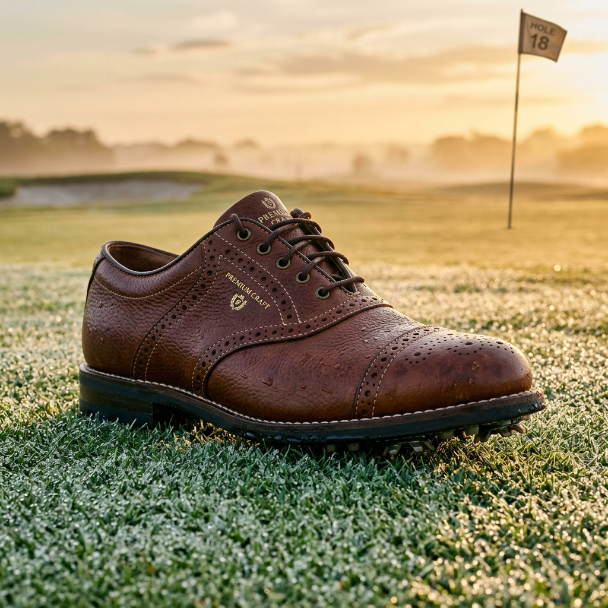
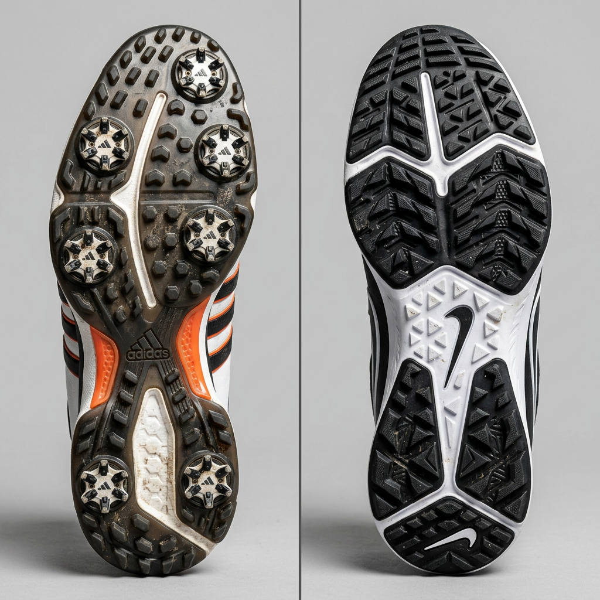
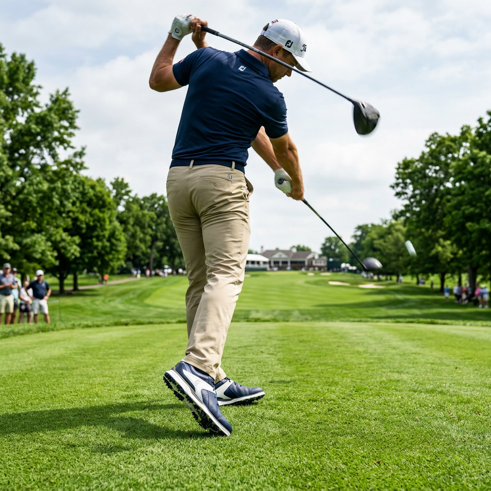

The Ultimate Buyer’s Guide to FootJoy Golf Shoes: Engineering the Perfect Swing Foundation
Why Your Choice of FootJoy Golf Shoes Defines Your Game
Every professional golfer knows that a powerful, consistent swing doesn't start with the shoulders; it starts with the feet. If you are currently wearing footwear that slips during your follow-through or leaves your arches aching by the back nine, you are voluntarily giving away strokes. This is where footjoy golf shoes become more than just apparel—they become essential equipment.
For decades, FootJoy has maintained its position as the #1 shoe in golf, not through marketing fluff, but through rigorous biomechanical engineering. When you invest in footjoy golf shoes, you are investing in a platform designed to maximize ground force production, provide lateral stability, and ensure all-day comfort. In this guide, we will break down exactly what makes this brand the gold standard for high-intent buyers who demand the best from their gear.

The Science of Stability: Why FootJoy Leads the Field
The primary role of footjoy golf shoes is to create a stable connection between the golfer and the turf. Without this connection, energy is lost. FootJoy utilizes proprietary technologies like the Power Stabilizer outsole and the Stability Bridge to ensure that even during the highest-velocity swings, your feet remain locked in place.
Authority in the golf world is earned on the grass. Data shows that a significant majority of players on professional tours choose footjoy golf shoes over any other brand. This isn't just tradition; it’s a calculated choice based on the need for traction in varied weather conditions and the demand for a shoe that doesn't break down after fifty rounds of walking.
Spiked vs. Spikeless: Choosing Your Traction Profile
One of the most critical decisions when browsing footjoy golf shoes is the traction system. High-intent buyers must weigh the benefits of traditional spikes against the modern versatility of spikeless designs.
- Spiked FootJoy Golf Shoes: These are the choice for maximum torque. If you play in wet conditions or have a high swing speed, the replaceable cleats provide deep penetration into the turf, preventing any micro-slips that could ruin a shot.
- Spikeless FootJoy Golf Shoes: Utilizing advanced TPU traction patterns, these offer incredible versatility. They are perfect for the golfer who wants to go from the car to the clubhouse to the first tee without changing shoes, all while maintaining a surprisingly high level of grip.

Premium Materials: The Performance of Leather and Synthetics
The longevity of your footjoy golf shoes depends heavily on the materials used in the upper. FootJoy is famous for its partnership with Pittards of England, producing some of the finest ChromoSkin leather in the world. This leather is not only incredibly soft and supple but also provides 100% waterproof protection—a non-negotiable for the dedicated golfer.
For those seeking lightweight performance, FootJoy also offers engineered synthetics and mesh uppers. These are designed for maximum breathability during summer rounds, ensuring that heat and moisture are wicked away from the foot, preventing the friction that leads to blisters.
The "Fit" Factor: Why FootJoy Sizing Matters
A common mistake among buyers is choosing the wrong size. Footjoy golf shoes are built on various "lasts" (the mold of the foot). Some models offer a fuller fit across the forefoot, while others provide a more athletic, narrow heel. Because a golf shoe must prevent internal foot movement during a swing, a precise fit is paramount.
Many FootJoy models also feature the BOA Fit System. Unlike traditional laces that can loosen over time, the BOA dial allows for a micro-adjustable, uniform fit that stays secure from the first drive to the final putt. This level of customization is why serious players gravitate toward footjoy golf shoes when performance is on the line.

Maximizing Your Investment: Care and Maintenance
To ensure your footjoy golf shoes last for multiple seasons, proper care is essential. Always rotate your shoes if you play back-to-back days to allow the leather to dry naturally. Use cedar shoe trees to maintain the shape and absorb moisture. By treating your footwear as a piece of precision equipment, you maintain the structural integrity that supports your game.
Final Verdict: Why FootJoy Golf Shoes Are a Non-Negotiable
If you are serious about lowering your handicap, you cannot overlook your foundation. Footjoy golf shoes provide the perfect intersection of heritage, style, and cutting-edge performance technology. Whether you prefer the classic look of the Premiere Series or the athletic feel of the HyperFlex, you are choosing a brand that understands the specific demands of the golf swing better than any other.
Stop settling for mediocre footwear that fails when the ground gets damp or your swing gets aggressive. Elevate your game by choosing the stability, comfort, and prestige that only footjoy golf shoes can deliver. Your feet—and your scorecard—will thank you.